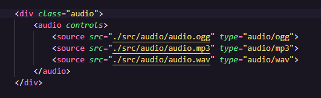

Para aplicar nossa tag de áudio precisamos escrever o código descrito acima na imagem.
Quando escrevemos "audio" o emmet(autocomplete) nos da o seguinte caminho: "audio src="
Apenas isso não é o suficiente para que nosso áudio apareça na tela. Precisamos colocar logo após o "audio" o atributo "controls" e agora sim aparece nosso áudio na tela. O controls serve para fazer nossa tag de áudio aparecer e com ela mostra todos os controles da nossa tag, como por exemplo: o botão play, minutos que o áudio já passou e quantos minutos tem o áudio total, barra de progresso, botão de volume e os 3 pontinhos que servem para fazer download do áudio e redefinir a velocidade dele.
Podemos colocar outro atributo que é o "autoplay", mas é melhor não por. Isso serve para que quando nossa página for recarregada ou o usuário entrar nela o audio começa trocar sozinho. Melhor deixar isso quieto a menos que precise
Outro atributo que temos é o "preload", ele vai oferecer 3 tipos, que são: auto, metadata e none
AUTO: é o atributo padrão, sinalizando isso ou não é o que vai aparecer por padrão. O problema dele é que carrega o áudio todo assim que a tela é carregada, mesmo que nosso usuário não clique no áudio ele vai carregar gastante banda atoa. Se tiver 10 aúdios na nossa página o site vai carregar tudo sem necessidade.
METADATA: Esse vai servir para carregar apenas algumas informações do áudio e não o áudio todo. Como por exemplo vai carregar quanto tempo tem nosso áduio.
NONE: Esse não vai carregar nada, mas isso é um problema também porque se o áudio for muito grande quando o usuário clicar em cima pode ter um delay até carregar alguma coisa e começar a tocar.
Cada navegador pode aceitar ou não diferentes extensões de áduio. Temos 3 tipos de extensões "ogg", "mp3" e "wav".
Para melhorar nosso site e deixar tudo preparado para cada tipo aceito nos navegadores podemos escrever o código conforme mostrado na imagem. Assim quando o ususário carregar nossa página no navegador que ele prefere usar vai carregar o áudio.
Quando for postar o áudio devemos primeiro mudar as versões dele, podemos fazer isso nesse site Convertion.
Só pegar o áudio, colocar nele e converter para a versão escolida.